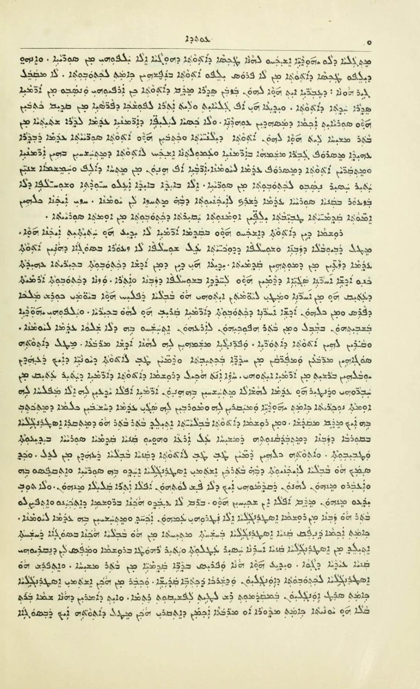
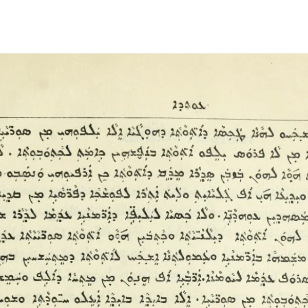

A recognizable, modern Syriac script.
Work in progress. Eden is pre-release: letters, weights and spacing are still changing, and it isn't available to download yet.
Eden is an Eastern Syriac (ܡܕܢܚܝܐ) typeface made primarily for digital text. It keeps the structure, contrast and silhouettes that make written Assyrian recognizable, and redraws them as type instead of imitating ink on paper.
Digital Eastern Syriac fonts mostly go one of two ways: they copy ink on a manuscript, or they forget it altogether.
Skeuomorphic
These keep everything a broad nib cut at 5–20° leaves behind: chisel-cut tips, wedge entries, hairline flicks, strokes that swell where the ink pooled. On a screen there's no tool, and the hairlines drop out and the tips alias at text sizes.
Flattened
These fonts fix rendering issues by removing contrast: one weight, straight diagonals, the same ending everywhere. It's clean, but letters lose the features that tell them apart and make the text look Assyrian. It's a Latin sans applied to a script that doesn't work that way.
Eden sits between them. For each stroke, end and swell in the traditional letters, it asks whether the letter needs it or only the pen made it. What tells letters apart stays, what the script needs but the pen shaped is redrawn, and what only the pen made goes.






Bet in late manuscripts and on the printing press.
The first two pages are manuscripts and the last two are print. Pirdesa d'Eden and the Khoudra were copied out by hand by scribes; Simta d'Lishana Suryaya and Sita Sapreta came off printing presses in Mosul and Tehran respectively.
For most of its 2,000-year history the script was written by hand, with a reed pen, and every letter in the two manuscripts carries the angle of the nib and the pace of the hand that made it.
Printing changed what the letters had to do. When the script went into metal type in the 19th century, at the presses in Urmia and Mosul, each letter had to be cut as a punch, cast in lead and set beside every other letter in a line. A typecase only holds so many sorts, so the printers kept the joins and forms a reader needs and gave up the rest. Strokes got heavier and more even so they'd hold up under the press. Simta d'Lishana Suryaya, printed in Mosul in 1897, shows how much could be taken out while the page still remains recognizable in script, and Sita Sapreta, printed in Tehran in 1971, shows the same printed letter still in use most of a century later.
Computers could have carried that work forward, and mostly didn't. Most digital Eastern Syriac typefaces went back past the press to the manuscript, copying the pen, nib angle and all, onto a screen that has no pen.
Eden picks up where the printers left off. It keeps what a reader uses to tell one letter from another, and lets go of what only the tool needed. The tool is different now. The press wanted heavy, even strokes and a small set of sorts. The screen wants shapes that stay clear in pixels and at small sizes. What doesn't change is the test: if cutting something from the handwritten script makes a word harder to read, it stays.
Every letter stays recognizable.
If you learned to read from the scribal hand, you should know every letter at a glance. When simplifying a shape makes it harder to read, the shape stays.
Little contrast, and only where the letter has it.
Most strokes are close to the same weight. A stroke thins only where the letter does, like Alap's stem narrowing toward its head or final Nun's tail running to a point. Nothing imitates the cut of a nib.
Turns end round, lifts end flat.
Where the pen turned, the end is round: Alap's head, Gamal's tail. Where it lifted, the stroke stops flat. Points are kept for the teeth, for where two curves meet, and for tails that trail off.
The Shleṭa holds the word together.
The flat baseline stroke runs through every word, and every join happens on it. It's 100 units tall in Regular, and thinner or thicker in the other weights.
Letters share parts.
Stems, bowls, teeth and the Shleṭa are drawn once and reused (see Parts). Fixing a part fixes every letter that uses it.